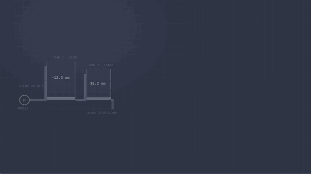

pyplant: A Process Plant You Can Break on Purpose

Fault-detection research has a data problem that is easy to overlook: real plants rarely let you break them. You can't open a leak in a live process to see what your detector does, and public benchmark datasets come with their own quirks and fixed scenarios. So I built a plant I'm allowed to break — a bench-scale process with the same layers a real one has, running on a laptop.
pyplant is a simulated two-tank plant with a soft PLC, a Modbus and OPC UA SCADA stack, a historian, ISA-18.2 alarm management, fault injection, and machine-learning fault detection, all driven from one GUI. It is open source, runs in Python at real time or up to twenty times faster, and nothing in it needs hardware.
How to read this post
The post is written for two kinds of reader, and each section is labelled so you can skip what you don't need.
You want to see it work
Read the fault you cannot see, watch the walkthrough, then follow the six steps. Look for the green In plain terms boxes; they explain each layer without jargon. You don't need to read the expert boxes.
You want the method
Jump to the layer-by-layer methods, detection and evaluation, and extending it. Open the Expert panels for numbers, design rules and the bugs that shaped them. The steps in the hands-on section also carry expert notes.
The fault you cannot see
The project grew out of one observation. Open a leak in tank 1 while a level controller is running, and this is what happens:

| Tank level | Controller output | |
|---|---|---|
| Before the leak | 300.00 mm | 66.18 % |
| After it settles | 300.00 mm | 75.80 % |
The level returns to setpoint exactly. The controller has absorbed the fault, and its entire signature now lives in the valve position. A detector that watches only the level cannot see this fault at all — and the operator's alarm list stays empty throughout.
In a closed loop, the controller hides the fault you are looking for.
Think of a thermostat in a house with a slightly open window. The room stays at 21 °C, so the temperature reading looks perfect — but the heater is working harder than before. The problem shows up in how hard the controller has to work, not in the number it is trying to keep steady. pyplant lets you reproduce exactly this, safely, and then test whether software can notice it.
Expert Why the level comes back exactly
LIC101 is a velocity-form PI controller tuned by internal model control (IMC) at the design point: process gain K ≈ 15.4 mm/%, open-loop time constant τ = 72 s, closed-loop λ = 13 s, giving Kc = 0.35 %/mm and Ti = 72 s with no derivative. Measured response to a 50 mm setpoint step: no overshoot, 2 % settling in about 40 s, zero offset.
Integral action gives zero steady-state offset to any step disturbance, so a constant leak flow is rejected in the level and re-appears one-for-one in the manipulated variable. The new steady-state valve position is what balances the extra outflow. That is why every detector in pyplant is fed the controller output and three physics residuals alongside the raw measurements.
See it in under two minutes
The animation below is the whole 17-step quick-start guide in about 97 seconds: start the stack, step the setpoint, inject a leak, watch the controller hide it, generate a labelled dataset, and train four detectors to catch it.

Try it yourself: six steps
Each step says what to do, what you should see, and what an expert should pay attention to. The numbers come from the quick-start guide, so you can check your own run against them.
Install and launch the workbench
git clone https://github.com/mhmodir/pyplant.git
cd pyplant
python -m pip install -e ".[ml,ui,dev]"
pyplant-workbenchDo: you need Python 3.11 or newer. Open http://127.0.0.1:8050. No Python? docker compose up --build then open http://localhost:8050.
You should see: a header with 0/4 services in red, and five tabs: Quick start, Runtime, Faults, Data, Model. Nothing is running yet.
Expert note: the extras are independent — ml adds scikit-learn, pyarrow and joblib; ui adds Dash and Plotly; dev adds pytest. On Windows, use a fresh conda environment (check the prompt says (pyplant), not (base)) and keep speed at 4× or below.
Run a leak offline (10 seconds)
Do: on the Quick start tab, scroll to Default scenario, keep Leak in tank 1 and 30 minutes, press Run scenario. No services are needed.
You should see: level change +0.02 mm (the loop hides the leak), controller output change +9.64 % (the fault signature), flow FT101 up by 2.91 L/min, pump trip none, fault onset at 720 s, and a red band on the chart where the fault is active.
Expert note: this uses the same offline fast runner as dataset generation: the same physics and the same PLC program, with no network and no clock, at roughly 1900× real time.
Start the live stack and read the healthy plant
Do: press Start stack at 1× real time, open the Runtime tab, and note the healthy values. Then type 340 in the LIC101 setpoint box and press Write.
You should see: badge 4/4 services in green. Healthy reference: tank 1 at 300.0 mm, tank 2 at 176.8 mm, valve at 66.1 %, inflow FT101 10.08 L/min against outflow FT102 10.05 L/min (in balance), pump pressure about 50 kPa. After the setpoint write the level climbs to 340 mm cleanly, with no overshoot.
Expert note: watch SCAN (about 3.7 ms of a 100 ms budget) and OVERRUNS (must stay 0). The PLC reports its own scan time and overruns as tags. The Runtime tab also shows the exact command line of every service, handy for running them by hand.
Break the plant and watch the controller fight
Do: on the Faults tab press Leak in tank 1. Scroll to Ground truth against what the instruments report. After about two minutes, go back to the LIC101 faceplate on Runtime, then press Open HMI.
You should see: the faults badge turn red and an active fault row (a leak with an effective area of 0.000050 m²). In the ground-truth table, true and reported values agree within noise, so this is a process fault, not a sensor fault. Two minutes on, the valve is nearly wide open (controller output 93.4 %, up from 68.6 %), inflow has risen from 10 to 18.3 L/min, pump pressure has fallen from 50 to 27.9 kPa — and no alarm has fired.
Expert note: faults enter through the plant's own HTTP API; nothing above the plant is told. With the setpoint at 340 mm and the valve almost fully open, recovery is slow: the level dips to about 290 mm and creeps back. Sticking-valve and frozen-sensor faults need the loop to move, so raise speed (10×, or 4× on Windows) or change the setpoint after injecting.
Generate a labelled dataset
Do: press Clear all faults, open the Data tab, choose the Quick preset (about 1.5 min), and press Generate.
You should see: a progress bar filling, then a result of 14 runs (6 normal and 8 faulty), 16,814 samples, saved as a 1.7 MB dataset.parquet. Standard (about 4 min) and Thorough (about 10 min) presets build larger grids.
Expert note: each fault mode is swept across magnitudes with a randomised onset and its own seed, so a model cannot learn "the fault starts at minute 24". Generation runs in a separate process; the live plant keeps running untouched.
Train four detectors and compare them
Do: on the Model tab leave all four methods ticked (z-score limits, PCA/MSPC, isolation forest, autoencoder) with window 60, stride 10, quantile 0.995, and press Train.
You should see: about 12 s later a results table and a per-fault-mode table. On the tiny Quick dataset, PCA and the autoencoder tie at 88 % detected with a 43 s median delay and zero false alarms per day, so PCA is selected (ties go to fewer false alarms, then the simpler method). The leak is detected in 100 % of runs, 139 s after onset, and isolated to FLOW_IMBALANCE.
Expert note: the quantile sets the alarm threshold on normal data — higher means fewer false alarms but later detection. The Quick dataset is a demo; the full 58-run benchmark below separates the methods much more clearly. If the table says "no model trained yet" after the job ends, reload the page.

How it works, layer by layer
Everything a real plant has is here at bench scale: a centrifugal pump feeding tank 1 through a control valve, a second tank downstream, a PID loop holding level, interlocks that trip the pump, and the network between the field, the controller and the operator.
Plant physics
Two tanks connected by a small opening. A pump pushes water in through a valve; the first tank drains into the second, which drains away. The controller adjusts the valve to keep tank 1 at 300 mm. Because tank 2 has no controller, trouble in tank 1 reaches it later.
Expert Physics, sizing and time stepping
The physics lives in pyplant/core/hybrid_tank.py as pure functions in SI units, with no sockets, sleeping or global state. A centrifugal pump with a quadratic curve feeds tank 1 through an equal-percentage valve with a 2 s actuator lag. Valve flow depends on pump pressure and pump pressure depends on flow, but with a quadratic pump curve that algebraic loop closes in closed form, so there is no iteration and no stiffness at a 50 ms step.
| Quantity | Value |
|---|---|
| Tank area, each | 0.020 m² |
| Overflow lip | 600 mm |
| Pump shutoff / max flow | 60 kPa / 25 L/min |
| Design point | 66 % valve, 300 mm, 10 L/min, 50 kPa |
| Open-loop τ at design point | 72 s |
| Usable level range | about 30 to 580 mm (valve 0.30 to 0.79) |
Three rates are deliberately different: dt = 50 ms governs integration accuracy, control_period = 100 ms governs what the controller sees, and log_period = 1 s governs what the historian stores. Inputs are held between scans, giving a genuine zero-order hold at the controller's own sample time — skipping that is the usual reason a PID looks better in simulation than on a PLC. Three parameters double as fault knobs sitting at healthy values: pump_gain (impeller wear), cda_12_gain (interconnect fouling) and cda_leak (a hole in tank 1).
Controller and PLC
A soft PLC — a program that behaves like an industrial controller — wakes up ten times a second, reads the sensors, decides how far to open the valve, and writes the answer back. It also guards the pump: if the tank gets too full or flow stops for too long, it trips the pump and stays tripped until someone resets it.
Expert PID form, protection logic and the scan engine
Velocity-form PID. The output is the integrator state, so anti-windup and bumpless transfer fall out of the structure: when the output clamps the increment is discarded, and in manual the output is whatever the operator wrote. Derivative acts on filtered measurement, so a setpoint step produces no kick.
| Function | Trigger | Action |
|---|---|---|
ALM_LT101_HI | LT101 above 500 mm | alarm |
ALM_LT101_LOLO | LT101 below 50 mm | alarm |
ALM_PT101_HIHI | PT101 above 58 kPa | alarm |
ILK_PMP101 | LT101 above 550 mm, or FT101 below 1 L/min for 15 s | latched trip |
All thresholds are read from the tag dictionary, alarms carry hysteresis, and the minimum-flow trip carries an on-delay. Pump protection is minimum flow rather than high pressure because a centrifugal pump against a shut valve simply rises to shutoff head (60 kPa here), so a high-pressure trip below that would fire on legitimate low-output excursions.
Scan engine. Every scan reads inputs, executes logic against the frozen image, then writes outputs, all behind an IOLink protocol so the transport can change without touching the program. Scheduling is drift-free: targets are computed as origin + n · period / speed rather than by sleeping after each scan, so work eats into slack, never into phase (100 ticks of a 100 ms period with a 70 ms body land at exactly 10.000 s, not 17.000 s). PLC timers count scans, not seconds. The engine reports SCAN_MS, SCAN_OVERRUNS and PLC_HEARTBEAT as ordinary tags.
Field network and SCADA
The plant and the PLC are separate programs that talk over the same kinds of network protocols real factories use: Modbus between the field device and the controller, and OPC UA between the controller and everything the operator sees. You can even point a standard OPC UA tool such as UaExpert at the running plant.
Expert Tag dictionary, ownership, blocks and OPC UA
One source of truth. pyplant/tags.py declares every signal once: description, units and span, alarm limits, Modbus table and address, integer scale factor, owning process and OPC UA path. Analog values are sent as round(value · scale) in 16-bit registers, ranges are checked at import, and out-of-range values clamp rather than wrap, so a bad write produces a pegged reading rather than a sign flip.
Ownership. Every tag has one owner (PLANT, PLC, OPER or ML) and every block has one writer. A block written by two parties loses updates between a read and a write, which is why the operator's setpoint block is separate from the PLC's readback of it. Reads and writes are by block, never by tag: one Modbus transaction for six measurements, and a partial block write is refused. Four round trips per scan measure about 0.7 ms against a 100 ms budget.
OPC UA. The address space is generated from the tag dictionary and every analog node carries EngineeringUnits and EURange. The server is a view of the same store the Modbus server holds, not a second copy; writable nodes track the last value seen so a refresh running between a client write and its handler cannot revert the write. If the PLC stops writing, the valve holds its last command, as a real one does.
Default ports (workspace base port 5400):
| Port | Service | Protocol | Browser? |
|---|---|---|---|
| 5400 | plant | Modbus TCP | no |
| 5401 | plant | HTTP, fault API (/docs) | yes |
| 5402 | PLC | Modbus TCP | no |
| 5403 | PLC | OPC UA opc.tcp://127.0.0.1:5403/pyplant/ | no, use an OPC UA client |
| 5404 | historian | HTTP, query API | yes (/api/health) |
| 5405 | HMI | HTTP, operator page | yes |
| 8050 | workbench | HTTP | yes |
Historian and operator HMI
The historian is the plant's logbook: it records every signal as it changes. The HMI is the operator's screen: a live picture of the tanks, a trend chart, a control panel for the loop, and an alarm list that makes sure a brief problem nobody saw is not forgotten.
Expert Historian semantics and the ISA-18.2 state machine
Historian. A DuckDB store in long format, one row per (ts, tag, value, quality); wide tables look tidier until someone adds a tag and needs a migration. It subscribes over OPC UA rather than polling, buffers notifications and flushes in batches. Samples are stored by exception plus a heartbeat so the gap never exceeds a maximum (30 s by default). Resampling is last-value-carried-forward, never interpolation: between two rows the signal was held, and interpolating would invent a ramp on a valve position and fractional values on an alarm bit, so a model trained on it would learn the resampler instead of the plant. covered_span(tags) returns the interval where every requested tag has a value. Exactly one process writes the database, because DuckDB takes an exclusive lock.
Alarms. A boolean flag collapses four situations into two. The ISA-18.2 state machine keeps them apart:
| State | Meaning |
|---|---|
NORMAL | quiet, nobody needs to act |
UNACK_ALARM | active, nobody has looked at it |
ACK_ALARM | active, somebody has taken responsibility |
RTN_UNACK | it cleared before anyone looked |
RTN_UNACK is the point: a condition that comes and goes between two operator glances leaves no trace in a flag-based list, and the transient nobody saw is very often the interesting one. Shelving is a deliberate, expiring silence (capped at eight hours, reason recorded), and unshelving restores the state the condition justifies now. The HMI is a client of the control system: writes go to OPC UA, only writable tags are accepted, out-of-span setpoints are rejected with a 422 rather than silently clamped, and a reset is a pulse, because a latched interlock needs an edge, not a level.
Workbench and the two drivers
The workbench is the one browser window that starts everything, lets you break the plant with a click, builds training datasets and trains the detectors. It keeps no secrets of its own: every number it shows came from a running service a moment ago.
Expert Two drivers, one program
Dataset generation and the live plant run the same Program object against the same physics; only the clock and the transport differ. The fast runner has no network and no clock and runs at roughly 1900× real time, so a simulated hour takes under two seconds and a dataset of 58 one-hour runs takes minutes. The live plant therefore cannot drift from the training data. The workbench holds no process state, no physics and no thresholds inside a callback, and it trains detectors in background processes.
Eight faults, eight fingerprints
Faults are broken parts you can add to the running plant: a hole in the tank, a worn pump, a clogged pipe, a sticky valve, or a lying sensor. Each one leaves a different trail in the data. Importantly, the control system and the operator screen are not told a fault exists — just like in a real plant, you only find out by watching.

| Fault | Enters at | What you see | Isolating channel |
|---|---|---|---|
| Leak | the process | level recovers, valve opens, inflow exceeds outflow | FLOW_IMBALANCE |
| Worn pump | the process | valve opens to make up lost head | HEAD_RESIDUAL |
| Fouled interconnect | the process | valve closes, tank 2 drains down | LT102, FT102 |
| Sticking valve | the actuator | a sawtooth limit cycle; command and stem disagree | OP_MINUS_ZT |
| Sensor bias | the instrument | the reading looks perfect; the true level is offset | reported separately |
| Sensor drift | the instrument | an offset that grows slowly | reported separately |
| Sensor frozen | the instrument | a dead reading; move the setpoint and the pump trips | reported separately |
| Sensor noise | the instrument | always on, as realism; never labelled a fault | — |
Expert Injection design, stiction measurements and the frozen-sensor cascade
Three entry points. Faults are objects applied to a running plant, never edits to the physics, and each enters at exactly one place: a parameter (Leak, Fouling, PumpWear), a command (ValveStiction) or a signal (SensorBias, SensorDrift, SensorStuck, SensorNoise). Injection happens in Simulation.integrate(), the stepper both runners share, so a fault behaves identically in a dataset run and on the live plant. sim.true_measurements is what the instruments would read if none were lying; sim.measurements is what the control system sees. A transmitter reading 30 mm high and a genuine 30 mm rise produce identical numbers in LT101; they differ only in what the rest of the plant does.
Ramps are not cosmetic. Every fault has a start, an optional end and a ramp; a scenario set containing only step changes trains a detector that is useless on faults that creep. The scenario grid sweeps each mode across magnitudes with randomised onsets and per-run seeds.
Noise is not decoration. Every scenario carries default instrument noise, applied as benign faults that never count as positive labels. Without it a lined-out loop never moves its valve at all, so stiction produces no limit cycle and cannot be detected — and a detector trained on noiseless signals learns a threshold that collapses on the first real transmitter.
Stiction measured (deadband 10 %, slip 7 %, constant setpoint):
| LT101 p-p | OP p-p | mean |OP − ZT101| | |
|---|---|---|---|
| healthy | 2.65 mm | 0.92 % | 0.12 % |
| sticking | 30.1 mm | 11.6 % | 4.44 % |
The command-versus-stem gap identifies stiction, and it is invisible to anything looking only at LT101.
A cascade nobody scripted. sensor_stuck freezes LT101. The controller chases a reading that cannot move, winds the valve shut, starves the pump, and the minimum-flow interlock trips at t = 1985 s. One frozen instrument, and the loop destroys itself.
Detecting what the controller hides
The detectors learn what "normal" looks like by studying the plant running healthily. They are never shown a fault during training. Afterwards, each one is tested on fresh runs it has never seen — some healthy, some faulty — and graded on three things an operator would care about: how many faults it caught, how fast, and whether it cried wolf.
Physics-informed channels do the isolation
Three channels are computed rather than measured. Each exists because a first-principles argument says the fault lives in a difference that no single tag contains. Giving a model the residual of a physical relationship is cheaper than making it learn the relationship.
| Channel | Argument | Isolates |
|---|---|---|
FLOW_IMBALANCE | FT101 − FT102 is zero by conservation of mass | leaks |
HEAD_RESIDUAL | PT101 minus what the pump curve predicts at that flow | pump wear |
OP_MINUS_ZT | command minus stem position, zero on a healthy valve | stiction |
How the evaluation is done
- Normal data only for training. A plant has years of normal operation and a handful of documented failures. A supervised classifier would be trained on the rarest thing it will ever see and could not recognise a mode nobody labelled. Fault runs measure the result and never fit it.
- Split by run, never by sample. Windows overlap, and neighbouring windows from one run are nearly identical. A random sample split puts window 41 in training and window 42 in test; the score is not slightly optimistic, it is meaningless. Each run has its own seed, magnitude and onset.
- Operator-style metrics. Window accuracy mostly measures how long a fault was on. Instead: false alarms per day on held-out normal runs, detection delay in seconds from the declared onset, and isolation against the channel physics names.
- Persistence rule. A detection requires three consecutive flagged windows. A detector that flickers above threshold one window in twenty has a fine-looking detection rate and is unusable; the same rule counts false alarms. The raw window flag rate on normal runs is 0.14 %, and persistent excursions are zero.
- A stable health index. Raw reconstruction error has no stable scale — retrain and it changes completely.
HEALTH_INDEXpins the threshold at 50 with a decade per 50 points, so an alarm limit set by an alarm engineer survives a retrain.
Results
58 one-hour scenarios: 10 normal runs and seven fault modes, each at three magnitudes with randomised onset and its own seed. Detectors are fitted on normal runs only and judged on runs they have never seen.

| Method | Faulty runs detected | Median delay | False alarms | Isolation |
|---|---|---|---|---|
| z-score limits | 66.7 % | 175 s | 0 / day | 93 % |
| PCA (classical MSPC) | 83.3 % | 256 s | 0 / day | 60 % |
| Isolation forest | 37.5 % | 442 s | 0 / day | 93 % |
| Autoencoder | 100 % | 70 s | 0 / day | 73 % |
The autoencoder catches every fault, and fastest — the only one of the four that does. That is consistent with the plant being non-linear (square-root drains, a quadratic pump curve, an equal-percentage valve), which a linear subspace like PCA's cannot follow. I'd be careful, though: these runs show the gap, not its cause.
The best detector is not the best isolator
Z-score limits and the isolation forest name the right channel far more often (93 %) — while missing most faults outright. The autoencoder detects everything but isolates correctly 73 % of the time. Stiction is found through OP_MINUS_ZT by all four methods, every time. Leaks are attributed to the mass balance in all twelve runs by three methods but only eight by the autoencoder, and PCA never attributes pump wear to the pump curve.
Choosing a detector is a trade-off, not a ranking: do you need to know that something is wrong, or what?

Bugs that shaped the design
The repository's design notes read as an engineering log, and the most valuable parts are bugs that only appeared once something was measured. A few of my favourites:
- The PID that slammed the valve shut. A velocity-form PID starting at 0 % on a plant already running at 66 % shut the valve on the first scan, the pump dead-headed, and the rig tripped. The program now seeds its output from the valve position feedback.
- The timer that never fired. Accumulating
elapsed += 0.1reaches 0.9999999999999999 after ten scans, and a>=comparison against a 1.0 s preset never triggers. PLC timers now count scans, not seconds. - The stiction that produced no limit cycle. With a perfectly quiet signal the loop never moved its valve, so there was nothing to stick. Realistic instrument noise had to be part of every scenario.
- The sensor expectation that was backwards. In a closed loop, a level transmitter reading 25 mm high is driven back to setpoint: the reading looks perfect and the true level sits 25 mm low. The signature appears everywhere except the faulty instrument, so sensor modes are now reported by consistency rather than scored against a mistaken expectation.
- Isolation judged too early. Fouling ramps over twenty minutes; five minutes in it is still a transient that implicates the controlled level instead of the downstream one. Isolation now waits for the ramp to finish.
- The lost operator write. One block holding both the operator's setpoint and the PLC's readback lost updates between a read and a publish. The block was split so no block has two writers.
Extending it
If you can write a little Python you can add your own sensor, your own kind of fault, or your own detector, and the rest of the system picks it up. You never have to touch the networking code.
Four extension points
A new tag. Append it to _TAG_LIST in tags.py at an address inside an existing block (or widen the block). Run pytest: holes, overlaps, owner mismatches, scale overflows and duplicate addresses all fail there. If the detector should see it, add it to BASE_TAGS in ml/features.py; DIAG_ORDER is append-only because reordering it changes the meaning of every stored TOP_CONTRIB value.
A new fault. Subclass ParameterFault, SignalFault or (for actuator faults) Fault in faults/model.py, register it in FAULT_KINDS, and add a library entry in faults/scenarios.py so the dataset grid includes it. Decide which channel physics says should isolate it and add that to EXPECTED_CHANNEL in ml/evaluate.py — or leave it unscored and say why.
A new detector. Subclass Detector in ml/detector.py, implement _fit_core and _reconstruct (or override score), then add it to METHODS and make_detector. It inherits thresholding, contributions and the health index, and appears in the workbench's Model tab automatically.
A different plant. Replace core/hybrid_tank.py behind the same step/measure interface and update the tag dictionary. The runner, PLC, network layers and detectors do not need to change; the design point and alarm limits do.
Running it: four ways
| Way | Command | Then open |
|---|---|---|
| Workbench | pyplant-workbench | http://127.0.0.1:8050 |
| Services by hand | python examples/run_stack.py | HMI :5405, fault API :5401/docs |
| Docker, one container | docker compose up --build | http://localhost:8050 |
| Docker, four containers | docker compose --profile services up --build plant plc historian hmi | HMI :8080, fault API :8000/docs |
Expert Options, command-line use and platform notes
Workbench options. pyplant-workbench --workspace ./work/demo --base-port 5400. The workspace directory holds the config, datasets, trained models and history; --host 0.0.0.0 exposes the GUI beyond localhost. Two people on one machine each need their own workspace, base port and GUI port.
By hand. Start the four services in order, because each connects to the one before: pyplant.services.plant, then .plc, .historian, .hmi. Inject a fault from the command line with curl -X POST http://127.0.0.1:5401/api/fault -H 'Content-Type: application/json' -d '{"kind":"leak","id":"L1","magnitude":5e-5}', or run python examples/inject_fault.py, which also prints the controller's response once a second. (Opening /api/fault in a browser shows "Method Not Allowed" because the address bar sends GET.)
Training from the command line. pyplant-train --out artifacts --duration 3600 generates the scenario grid, fits the PCA baseline and the autoencoder on normal runs only, evaluates both on held-out runs, and writes the dataset, fitted detectors, a manifest and metrics.json. For a quick run add --duration 1200 --magnitudes 1 --repeats 1. The workbench's Model tab offers all four methods.
Docker. The one-container mode runs the workbench with the four services inside, publishes only the GUI port, keeps datasets and models in a volume, and runs as an unprivileged user with a health check. The four-container mode puts each service on a private network; if the PLC starts before the plant is listening it exits and is restarted, which is what a controller does when its field device is late. OPC UA is published on opc.tcp://localhost:4840/pyplant/.
Windows timer resolution. speed multiplies how fast the plant runs, so it divides the scan period. Windows schedules sleeps in steps of about 15.6 ms, so above roughly 4× the 100 ms scan falls below what the OS can deliver and SCAN_OVERRUNS climbs. The loop still controls; the scan engine is correctly reporting missed deadlines. Linux and macOS handle 20× comfortably.
Why pymodbus is pinned below 3.9. Later versions replaced the datastore API the plant uses to update its registers while serving them, which is exactly what a live plant does twenty times a second.
Who it's for
Students of process control
Start with the six steps above, then retune the loop with a short script and try every fault preset. Watching integral action absorb a leak teaches more than the transfer-function derivation alone.
Process and controls engineers
Use the Runtime and Faults tabs, work through the operator HMI, or connect an external OPC UA client such as UaExpert to opc.tcp://127.0.0.1:5403/pyplant/ and read the plant the way you would a real one.
Fault-detection researchers
A closed-loop testbed with labelled ground truth, randomised onsets and a run-level train/test split, plus a documented path for adding a fifth detector or a different plant.
Instructors and developers
Give each student their own workspace and base port. Developers can read the architecture notes, the 372 tests, and the design log, and add a tag, fault or detector.
Documentation
What's next
- Live inference. The
HEALTH_INDEX,TOP_CONTRIBandALM_HEALTHtags are declared and the HMI is ready to show them, but nothing publishes them yet. The next step is a service that runs the trained detector on a rolling window from the historian and writes its verdict back over OPC UA, so a diagnosis becomes an alarm. - A second plant. The physics sits behind one interface; a jacketed CSTR or the Tennessee Eastman process would exercise the same stack on a harder problem.
If pyplant is useful in your work, I'd love to hear how — and which fault you wish it could inject.
Clone it from GitHub, open an issue, or reach out via the contact page.